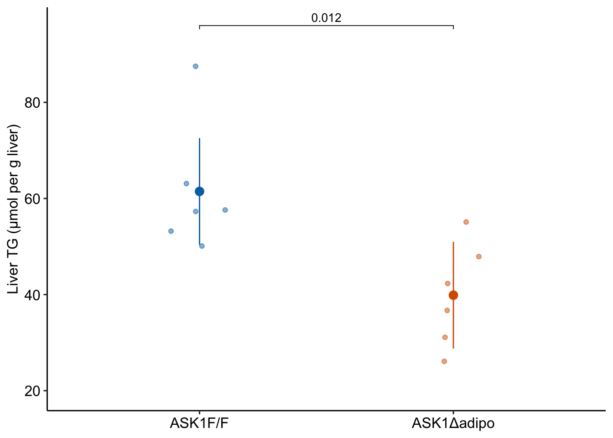
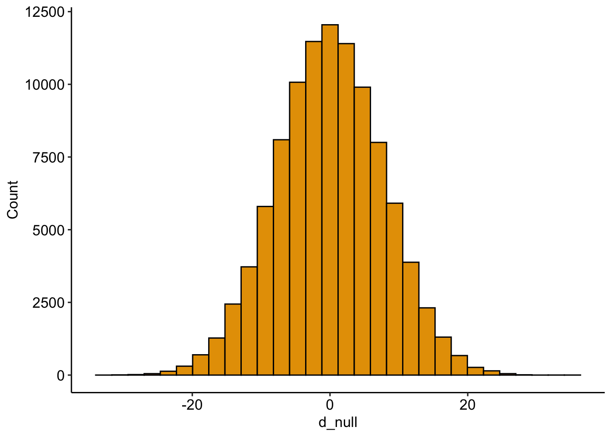
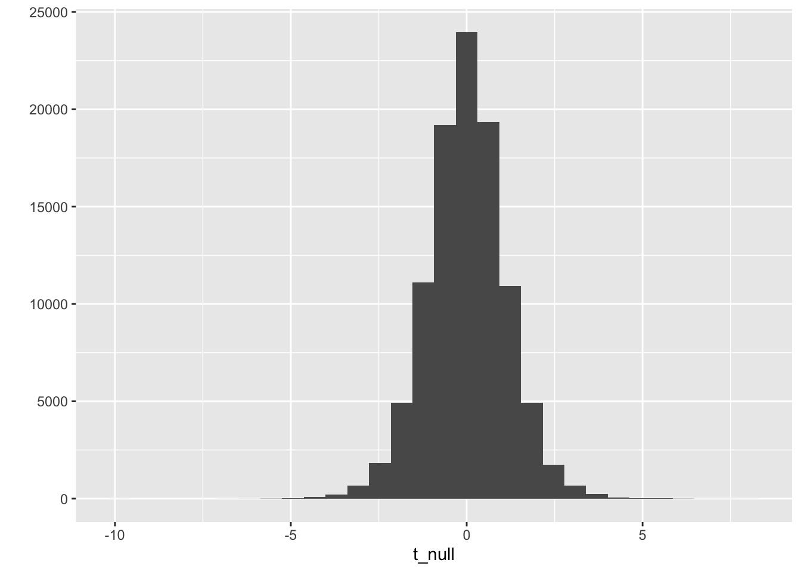
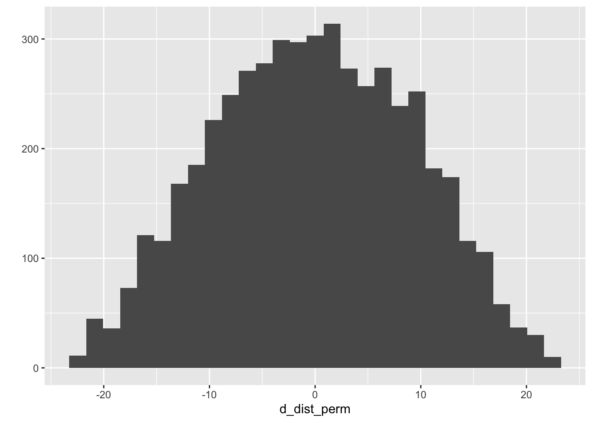
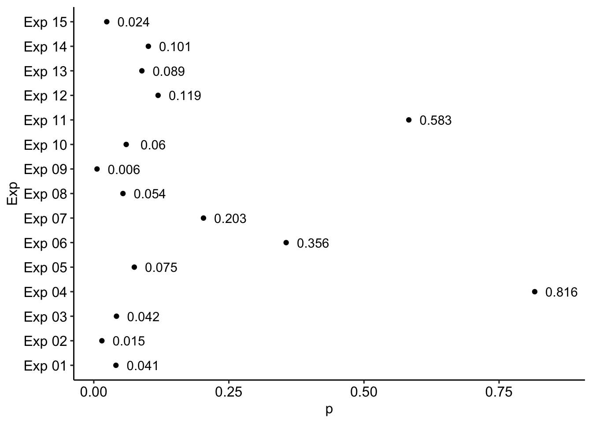
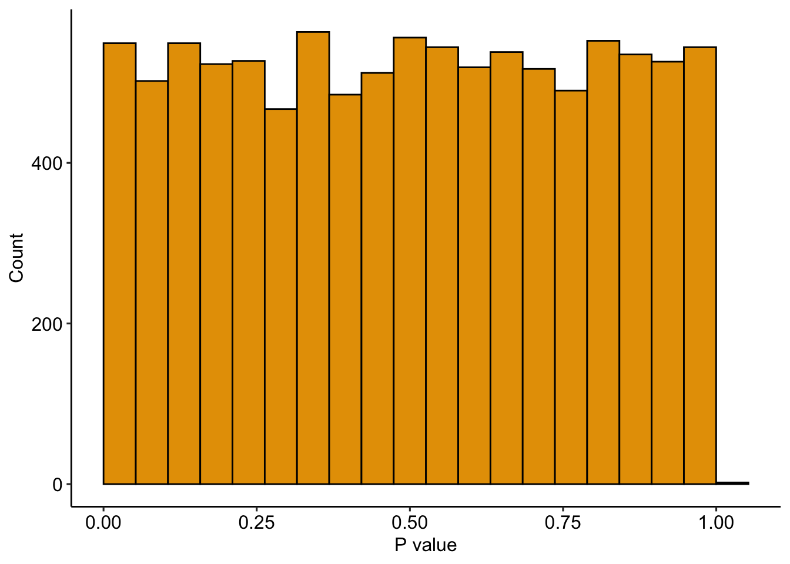

fig2i_m1 <- lm(liver_tg ~ treatment, data = fig2i)6 P-values
A general perception of a “replication crisis” may thus reflect failure to recognize that statistical tests not only test hypotheses, but countless assumptions and the entire environment in which research takes place. Because of all the uncertain and unknown assumptions that underpin statistical inferences, we should treat inferential statistics as highly unstable local descriptions of relations between assumptions and data, rather than as providing generalizable inferences about hypotheses or models. And that means we should treat statistical results as being much more incomplete and uncertain than is currently the norm.1
A p-value is a measure of the compatibility between observed data and the null model. Here, “compatibility” is a probability, specifically, the probability of sampling a test-statistic as or more extreme than the observed test statistic, if all the assumptions used to compute the p-value are true.
To deconstruct what this means, and the implications of the meaning, let’s use the fig2i data from Figure 2i in the study on the browning of white adipose tissue in mice that was introduced in Chapter 1
Data source: ASK1 inhibits browning of white adipose tissue in obesity
The chunk above fits a linear model with liver_tg as the response variable and treatment as the single \(X\)-varaiable. Figure 6.1 is the plot of the modeled means, 95% confidence intervals of the mean, and p-value of the significance test of the effect of treatment on liver triacylglycerol.

The coefficients of the model, and the standard error, 95% confidence interval, test-statistic, and p-value of each coefficient are shown in Table 6.1. Recall from Chapter 1 that, with this model, the coefficient for the intercept term is the mean liver_tg for the control group, which is the estimate of the true mean for a mice with functional ASK1 protein. And the coefficient for the treatmentASK1Δadipo term is the difference in means between the knockout and control group, which is the estimate for the true effect of knocking out ASK1 in the adipose tissue. The p-value for the estimate of the effect is 0.012. How do we interpret this number?
| Estimate | Std. Error | t value | p value | 2.5 % | 97.5 % | |
|---|---|---|---|---|---|---|
| (Intercept) | 61.5 | 4.98 | 12.3 | 0.000 | 50.4 | 72.6 |
| treatmentASK1Δadipo | -21.6 | 7.05 | -3.1 | 0.012 | -37.3 | -5.9 |
6.1 A p-value is the probability of sampling a value as or more extreme than the test statistic if sampling from a null distribution
The test statistic in the table above is a t-value. For this specific model, this t-value is precisely the t-value one would get if they executed a classical Student t-test on the two groups of liver TG values. Importantly, this is not generally true. For many of the models in this text, a t-value is computed but this is not the t-value that would be computed in a classical t-test.
When we do a t-test, we get a p-value. The probability returned in a t-test is \(p = \mathrm{prob}(t \ge t_{obs} | H_0)\). Read this as “the p-value is the probability of observing a t-value that is greater than or equal to the observed t-value, given the null model is true.” Probability, in this text, is a long run frequency of sampling. The specific probability associated with the effect of treatment on liver TG is the long-run frequency of observing a t-value as big or bigger than the observed t-value (the one you actually got with your data) if the null is true. Let’s parse this into “long run frequency of observing a t-value as big or bigger than the observed t-value” and “null is true”.
A thought experiment: You open a google sheet and insert 12 standard, normal random deviates (so the true mean is zero and the true variance is one) in Column A, rows 1-12. You arbitrarily assign the first six values (rows 1-6) to treatment A and the second six values (rows 7-12) to treatment B. You use the space immediately below these data to compute the mean of treatment A, the mean of treatment B, the difference in means (A - B), and a t-value. Unfortunately, google sheets doesn’t have a t-value function so you’d have to compute this yourself. Or not, since this is a thought experiment. Now “fill right” or copy and paste these functions into 999 new columns. You now have 1000 t-tests. The expected value of the difference in means is zero (why?) but the actual values will form a normal distribution about zero. Most will be close to zero (either in the negative or positive direction) but some will be further from zero. The expected t-value will also be zero (why?) and the distribution of these 1000 t-values will look normal but the tails are a little fuller. This row of t-values is a null distribution, because in generating the data we used the exact same formula for the values assigned to A and the values assigned to B. Now think of a t-value in your head, say 0.72 (remember that t-values will largely range from about -3 to +3 although the theoretical range is \(-\infty\) to \(+\infty\). What is the probability of observing a t of 0.72 or bigger if the null is true? Look at the row of t-values! Count the number of \(t \ge 0.72\) and then divide by the total number of t-values in the row (1000) and you have a probability computed as a frequency. But remember the frequentist definition is the long run frequency, or the expected frequency at the limit (when you’ve generated not 1000 or even 1,000,000 but an infinite number of columns and t-values).
Some asides to the thought experiment: First, why “as big or bigger” and not just the probability of the value itself? The reason is that the probability of finding the exact t is 1/infinity, which doesn’t do us much good. So instead we compute the probability of finding t as big, or bigger, than our observed t. Second, the t-test probability described above is a “one-tail probability”. Because a difference can be both in the positive direction and the negative direction, we usually want to count all the \(t \ge 0.72\) and the \(t \le -0.72\) and then add these two counts to compute the frequency of as extreme or more extreme values. This is called a “two-tailed probability” because we find extremes at both tails of the distribution. Third, we don’t really count \(t \ge 0.72\) but take advantage of the beautiful mathematical properties of the theoretical t distribution, which allows us to compute the frequentist probability (expected long range frequency) given the t-value and the degrees of freedom using the t-distribution.
Now what do I mean with the phrase “null is true”? Most people equate “null is true” with “no difference in means” but the phrase entails much more than this. Effectively, the phrase is short for “all assumptions used to compute” the p-value (see the Sander Greenland quote at the start of this chapter). A p-value is based on modeling the real data with a theoretical sample in which all the values were randomly sampled from the same distribution and the assignment of the individual values to treatment was random. Random sampling from the same distribution has three important consequences. First, random assignment to treatment group means that the expected means of each group are the same, or put differently, the expected difference in means between the assigned groups is zero. Second, random assignment to treatment also means that the expected variances of the two groups are equal. And third, random sampling means that the values of each point are independent – we cannot predict the value of one point knowing information about any other point. Here is what is super important about this: a p-value is less reliable if any one of these consequences is untrue about our data. A low p-value could arise from a difference in true means, or it could arise from a difference in true variances, or it could arise if the \(Y\) values are not independent of each other. This is why we need certain assumptions to make a p-value meaningful for empirical data. By assuming independent error and homogenous (equal) variances in our two samples, a low p-value is evidence of unequal means.
Let’s summarize: A pretty good definition of a p-value is: the long-run frequency of observing a test-statistic as large or larger than the observed statistic, if the null were true. A more succinct way to state this is
\[ p = \mathrm{prob}(t \ge t_o | H_o) \]
where t is a hypothetically sampled t-value from a null distribution, \(t_o\) is the observed t-value, and \(H_o\) is the null hypothesis. Part of the null hypothesis is the expected value of the parameter estimated is usually (but not always) zero – this can be called the nil null. For example, if there is no ASK1 deletion effect on liver TG levels, then the expected difference between the means of the control and knockout mice is zero. Or,
\[ \mathrm{E}(\bar{Y}_{knockout} - \bar{Y}_{control} | H_o) = 0.0 \]
6.2 Pump your intuition – Creating a null distribution
The mean liver_tg in the knockout treatment is 21.6 µmol less than the mean liver_tg in the control treatment. This is the measured effect, or the observed differences in means. How confident are we in this effect? Certainly, if the researchers did the experiment comparing two control (ASK1F/F) groups, instead of a control and treatment group, they would measure some difference in their means simply because of sampling (that is which mice were sampled for the experiment). So let’s reframe the question: are the observed differences unusually large compared to a distribution of differences that would occur if there were no effect? That is, if the “null were true”. To answer this, we compare our observed difference to this null distribution. This comparison gives the probability (a long-run frequency) of “sampling” a random difference from the null distribution of differences that is as large, or larger, than the observed difference.
What is a null distribution? It is the distribution of a statistic (such as a difference in means, or better, a t-value) if the null were true. Here, I hope to pump your intuition by generating a null distribution that is relevant to the ASK1 liver TG data. See if you can understand the script before reading the explanation below.
seed <- 1
n_rep <- 10^5 # number of replicate experiments
mu <- mean(fig2i[treatment == "ASK1F/F", liver_tg])
sigma <- sd(fig2i[treatment == "ASK1F/F", liver_tg])
n <- nrow(fig2i[treatment == "ASK1F/F",])
d_null <- numeric(n_rep)
for(rep in 1:n_rep){
sample_1 <- rnorm(n, mean = mu, sd = sigma)
sample_2 <- rnorm(n, mean = mu, sd = sigma)
d_null[rep] <- mean(sample_2) - mean(sample_1)
}
d_data <- data.table(
"d_null" = d_null
)
ggplot(data = d_data,
aes(x = d_null)) +
geom_histogram(bins = 30,
fill = pal_okabe_ito[1],
color = "black") +
ylab("Count") +
theme_pubr()
What have we done above? using the rnorm function, we’ve simulated an infinitely large population of mice that have a distribution of liver TG values similar to that of the mice assigned to the control (ASK1F/F) group. The true mean (\(\mu\)) and standard deviation (\(\sigma\)) of the simulated TG level are equal to the observed mean and standard deviation of the TG levels of the control mice.
- randomly sample 6 values from this population of simulated liver TG values and assign to \(\texttt{sample\_1}\). We sample 6 values because that is the sample size of our control in the experiment.
- randomly sample 6 values from the same population of simulated liver TG values and assign to \(\texttt{sample\_2}\).
- compute the difference of the means: \(\bar{Y}_{sample\_2} - \bar{Y}_{sample\_1}\).
- repeat 1-3 100,000 times, each time saving the difference in means.
- plot the distribution of the 100,000 differences using a histogram
The distribution of the differences is a null distribution. Notice that the mode of the null distribution is at zero, and the mean (-0.0313) is close to zero (if we had set \(n\) to infinity, the mean would be precisely zero). The expected difference between the means of two random samples from the same population is, of course, zero. Don’t gloss over this statement if that is not obvious. The tails extend out to a little more than +20 and -20. What this means is that it would be uncommon to randomly sample a value from this distribution of differences as or more extreme than our observed difference, -21.6. By “more extreme”, I mean any value more negative than -21.6 or more postive than 21.6. So it would be uncommon to sample a value from this distribution whose absolute value is as or more extreme than 21.6. How uncommon would this be?
diff_obs <- fig2i_m1_coef["treatmentASK1Δadipo", "Estimate"]
null_diff_extreme <- which(abs(d_null) > abs(diff_obs))
n_extreme <- length(null_diff_extreme)
(p_d_null = n_extreme/n_rep)[1] 0.00529In the 100,000 runs, only 529 generated data with an absolute difference as large or larger than 21.6 (an “absolute difference” is the absolute value of the difference). The frequency of differences as large or larger than our observed difference is 0.00529. This frequency is the probability of sampling a difference as or more extreme than the observed difference “under the null”. It is a p-value, but it is not the p-value in the coefficient table. This is because the p-value in the coefficient table is computed from a distribution of t-values, not raw differences. This raises the question, what is a t-distribution, and a t-value, more generally?
6.3 A null distribution of t-values – the t distribution
A t-test is a test of differences between two values. These could be
- the difference between the means of two samples (a “two-sample” t-test)
- the difference between a mean of a sample and some pre-specified value (a “one-sample” t-test)
- the difference between a coefficient from a linear model and zero
A t-test compares an observed t-value to a t-distribution. The null distribution introduced above was a distribution of mean differences under the null. A distribution of mean differences under the null is very specific to the mean and standard deviation of the population modeled and the sample size of the experiment. This isn’t generally useful, since it will be unique to every study (at least it wasn’t generally useful prior to the time of fast computers. One could, and some statisticians do, compute p-values using the algorithm above). A t-distribution is a way of transforming a null distribution of mean differences, which is unique to the study, into a distribution that is a function of sample size only.
A t-distribution is a distribution of t-values under the null, where a t-value is a difference standardized by its standard error. For a two-sample t-test, this is
\[ t = \frac{\bar{y}_2 - \bar{y}_1}{SE_{\bar{y}_2 - \bar{y}_1}} \tag{6.1}\]
The numerator is the effect while the denominator is the precision of the estimate. Like many test statistics, a t-value is a signal-to-noise ratio – the effect is the signal and the SE of the difference is the noise.
A t distribution looks like a standard, normal distribution, except the tails are heavy, meaning there are more large-ish values than the normal. Like the standard normal distribution, large t-values are unlikely under the null and, therefore, a large t has a low probability – or p-value – under the null.
Looking at the equation for the two-sample t-test above, it is easy to see that three features of an experiment are associated with large t and small p-values: 1) big effect size (the numerator of the equation), 2) small sample standard deviations (which results in small standard errors of the difference, the denominator of Equation 6.1, and 3) large sample size (which results in small standard errors of the difference). As a quick-and-dirty generalization, absolute t-values greater than 3 are uncommon if the null is true.
The p-value for a t-test comes from comparing the observed t to a null t distribution and “counting” the values that are more extreme than the observed t. The p-value is the relative frequency of these more extreme values (relative to the total number of t-values in the distribution). I have “counting” in quotes because nothing is really counted – there are an infinite number of t-values in the t-distribution. Instead, the t-distribution function is integrated to compute the fraction of the total area under the curve with t-values more extreme than the observed value. In a two-tailed test, this fraction includes both tails (positive t-values more positive than \(|t|_{observed}\) and negative t-values more negative than \(-|t|_{observed}\).
Let’s repeat the simulation of a null distribution of mean differences above but add the computation of the t-value for each replicate comparison in order to generate a null distribution of t-values. Importantly, I’ve also changed bits of the code to more properly think about what a computed t-value is. These changes are:
- I want to think of the first sample as being assigned to “WT” and the second sample as being assigned to “KO”. But, the KO sample is drawn from the same distribution (the same hat of numbers) as the WT sample – this guarantees that there is no difference in expected mean.
- I want to think of the observed variances of the WT and KO samples as sampled variances from this fake distribution. Therefore, I give the variance of the fake distribution the average of the observed WT and KO samples. The true (population) standard deviation (\(\sigma\)) of the simulated data, then, is the square root of this averaged variance.
I show the script, but don’t just cut and paste the code. Spend time thinking about what the each line does. Explore it by copying parts and pasting into console.
out_path <- here("output","chap_pval-tnull.Rds")
do_it <- FALSE # set this to TRUE to run and save to output folder
if(do_it){
seed <- 1
n_rep <- 10^5 # number of iterations
mu <- mean(fig2i[treatment == "ASK1F/F", liver_tg])
sd_control <- sd(fig2i[treatment == "ASK1F/F", liver_tg])
sd_knockout <- sd(fig2i[treatment == "ASK1Δadipo", liver_tg])
sigma <- sqrt((sd_control^2 + sd_knockout^2)/2)
n <- nrow(fig2i[treatment == "ASK1F/F",])
treatment <- rep(c("WT", "KO"), each = n) |>
factor(levels = c("WT", "KO")) # need this for for-loop
t_null <- numeric(n)
t_null_manual <- numeric(n)
for(rep in 1:n_rep){
wt_sample <- rnorm(n, mean = mu, sd = sigma)
ko_sample <- rnorm(n, mean = mu, sd = sigma)
# way no.1 - compute the t-tests using the linear model
y <- c(wt_sample, ko_sample)
m1 <- lm(y ~ treatment)
t_null[rep] <- coef(summary(m1))["treatmentKO", "t value"]
# way no. 2 - compute the t-tests manually!
# check to make sure these are the same as t_null !!!
diff <- mean(ko_sample) - mean(wt_sample)
se_diff <- sqrt(sd(ko_sample)^2/n + sd(wt_sample)^2/n)
t_null_manual[rep] <- diff/se_diff
}
saveRDS(t_null, out_path)
}
t_null <- readRDS(out_path)
t_data <- data.table(
"t_null" = t_null
)
ggplot(data = t_data,
aes(x = t_null)) +
geom_histogram(bins = 30,
fill = pal_okabe_ito[1],
color = "black") +
ylab("Count") +
theme_pubr()
Now let’s use this null distribution of t-values to compute a p-value
# what is the p-value?
# the p-value is the number of t-values in t_null_2 that are as large
# or larger than the observed t. Large, negative t-values
# are as unlikely under the null as large, positive t-values.
# To account for this, we want to use absolute values in our counts
# this is a "two-tail test"
# first assign the observed t-value
t_obs <- fig2i_m1_coef["treatmentASK1Δadipo", "t value"]
# now count the number of t-values in t_dis as big or bigger than this
# include the observed value as one of these (so add 1 to the count)
count <- sum(abs(t_null) >= abs(t_obs))
# the p-value is the frequency of t_dis >= t_obs, so divide
# count by the total number of t-values in the distribution.
# Again add one since the observed value counts as a sample
(p_ASK1 <- count/(n_rep))[1] 0.01146Hey that looks pretty good! Compare this to the p-value in the coefficient table above.
A p-value can be computed by counting the number of simulated t-values, including the observed value, that are equal to or more extreme (in either the positive or negative direction) than the observed t. Including the observed t, there are 1146 values that are more extreme than that observed. An approximate measure of p is this count divided by 100,001 (why is 1 added to the denominator?), which is 0.01146. This simulation-based p-value is very (very!) close to that computed from the observed t-test.
6.4 P-values from the perspective of permutation
A very intuitive way to think about p-values as a frequency is random permutation. A permutation is a re-arrangement of items. If there is an effect of ASK1 deletion on liver TG, then the arrangement of the values in the treatment column matters. If there is no effect of ASK1 deletion on liver TG, then the arrangement of the values in the treatment column does not matter.
Think about the structure of the liver TG data: there are two columns, treatment, which contains the assigned treatment, and liver_tg. The values in the treatment column were randomly assigned prior to the start of the experiment. If there is a negative effect of ASK1 deletion on liver TG, then assginment matters – the values in the liver_tg column for the ASK1Δadipo rows will be smaller than, on average, the values in the ASK1F/F rows. That is, a specific value of aliver_tg is what it is because of the value of treatement in the same row. Assignment to ASK1F/F or ASK1Δadipo changes the expected value of liver_tg. But, if there were no true effect, then assignment to ASK1F/F or ASK1Δadipo does not change the expected value of liver_tg. The expected value of every cell in the liver_tg column would be the same regardless of what is in the treatment column.
In our thought experiment, let’s leave the values in the treatment column be, and just randomly re-arrange or permute the values in the liver_tg column. What is the new expected diference in liver TG between the rows assigned to ASK1F/F and the rows assigned to ASK1Δadipo? The expected difference is Zero. Because the liver_tg values were randomly re-arranged, they cannot be caused by treatment assignment.
A permutation is a random re-arrangement of values in a column. Consider the many thousands of permutations of the values in the liver_tg column. A difference in means can be computed from each of these permuations and a distribution of differences can be generated. Is the observed difference extreme relative to the other values in this distribution? This is a permutation test – it compares an observed statistic to a distribution of the statistic computed over many thousands of permutations.
Let’s create a script for a permutation test
set.seed(1)
n_iter <- 5000 # number of random permutations
y <- fig2i[, liver_tg]
x <- fig2i[, treatment]
perm_diff <- numeric(n_iter) # this is a vector to hold the difference in means each iteration
for(iter in 1:n_iter){
xbar1 <- mean(y[x == "ASK1F/F"])
xbar2 <- mean(y[x == "ASK1Δadipo"])
perm_diff[iter] <- xbar2 - xbar1
# permute y
y <- sample(y, replace=FALSE)
# note that, when i=1, the first "permutation" is the original arrangement
}
diff_data <- data.table(
Difference = perm_diff
)
ggplot(data = diff_data,
aes(x = Difference)) +
geom_histogram(bins = 30,
fill = pal_okabe_ito[1],
color = "black") +
ylab("Count") +
theme_pubr()
From this distribution of distances generated by random permuation of the response, we can compute a permutation p-value.
(p_permute <- sum(abs(perm_diff) >= abs(perm_diff[1]))/n_iter)[1] 0.00766.5 Parametric vs. non-parametric statistics
A statistic such as the difference in mean liver TG between ASK1Δadipo and ASK1F/F groups does not have “a” p-value. A p-value is the probability of observing an event given a model of how the event was generated. For the p-value in the coefficient table above, the event is sampling a t-value from a modeled t distribution that is as or more extreme than the observed t-value. The model generating the null distribution of t-values includes random sampling from a distribution that is defined by specific parameters (in this case, a mean and a variance), these parameters define the location and shape of the distribution of values that could be sampled. A p-value computed from a distribution that is defined by a set of parameters is a parametric p-value.
For the p-value computed using the permutation test, the event is the probability of of computing a difference of means from a randomly permuted set of \(Y\) as or more extreme than the observed difference of means. The distribution of differences from the permutated \(Y\) data sets was not generated by any of the known distributions (normal, Poisson, binomial, etc.) given a specific value of parameters. Consequently, the permutation p-value is non-parametric.
The validity of all p-values depends on a set of model assumptions, which differ from model to model. The permutation p-value has fewer assumptions than a parametric p-value because no distribution is assumed (the permutation p-value is distribution-free).
6.6 frequentist probability and the interpretation of p-values
6.6.1 Background
There are at least three different meanings of probability.
subjective probability is the probability that an individual assigns to an event based on prior knowledge and the kinds of information considered reliable evidence. For example, if I asked a sample of students, what is the probability that a 30c homeopathic medicine could clear a Streptococcus infection from your respiratory system, their answers would differ because of variation in their knowledge of basic science, including chemistry and physics, their knowledge of what homeopathic medicines are, and how they weight different kinds of evidence.
classical probability is simply one divided by the number of possible unique events. For example, with a six-sided die, there are six possible unique events. The probability of rolling a 2 is \(\frac{1}{6}\) and the probability of rolling an odd number is \(\frac{1}{2}\).
frequentist probability is based on the concept of long run frequency. If I roll a die 10 times, the frequency of rolling a 2 will be approximately \(\frac{1}{6}\). If I roll the die 100 times, the frequency of rolling a two will be closer to \(\frac{1}{6}\). If I roll the die 1000 times, the frequency of rolling the die will be even closer to \(\frac{1}{6}\). So the frequentist definition is the expected frequency given an infinite number of rolls. For events with continous outcomes, a frequentist probability is the long run frquency of observing an outcome equal to or more extreme that that observed.
6.6.2 This book covers frequentist approaches to statistical modeling and when a probability arises, such as the p-value of a test statistic, this will be a frequentist probability.
When we do a t-test, we get a p-value. There are several ways to think about this probability. The most compact way is \(P(data | null)\), which is literally read as the probability of the data given the null (or “conditional” on the null), but is really short for the probability of the data, or something more extreme than the data, given that the null hypothesis is true. The “probability of the data” is kinda vague. More specifically, we mean the probability of some statistic about the data such as the difference in means between group A and group B or the t-value associated with this difference. So, a bit more formally, the probability returned in a t-test is \(\mathrm{prob}(t \ge t_{obs} | H_0)\). This is the long run frequency of observing a t-value as big or bigger than the observed t-value (the one you actually got with your data) if the null is true. Let’s parse this into “long run frequency of observing a t-value as big or bigger than the observed t-value” and “null is true”.
A thought experiment: You open a google sheet and insert 12 standard, normal random deviates (so the true mean is zero and the true variance is one) in Column A, rows 1-12. You arbitrarily assign the first six values (rows 1-6) to treatment A and the second six values (rows 7-12) to treatment B. You use the space immediately below these data to compute the mean of treatment A, the mean of treatment B, the difference in means (A - B), and a t-value. Unfortunately, google sheets doesn’t have a t-value function so you’d have to compute this yourself. Or not, since this is a thought experiment. Now ``fill right’’ or copy and paste these functions into 999 new columns. You now have 1000 t tests. The expected value of the difference in means is zero (why?) but the actual values will form a normal distribution about zero. Most will be close to zero (either in the negative or positive direction) but some will be further from zero. The expected t-value will also be zero (why?) and the distribution of these 1000 t-values will look normal but the tails are a little fuller. This row of t-values is a null distribution, because in generating the data we used the exact same formula for the values assigned to A and the values assigned to B. Now think of a t-value in your head, say 0.72 (remember that t-values will largely range from about -3 to +3 although the theoretical range is \(-\infty\) to \(+\infty\). What is the probability of observing a t of 0.72 or bigger if the null is true? Look at the row of t-values! Count the number of \(t \ge 0.72\) and then divide by the total number of t-values in the row (1000) and you have a probability computed as a frequency. But remember the frequentist definition is the long run frequency, or the expected frequency at the limit (when you’ve generated not 1000 or even 1,000,000 but an infinite number of columns and t-values).
Some asides to the thought experiment: First, why “as big or bigger” and not just the probability of the value itself? The reason is that the probability of finding the exact t is 1/infinity, which doesn’t do us much good. So instead we compute the probability of finding t as big, or bigger, than our observed t. Second, the t-test probability described above is a “one-tail probability”. Because a difference can be both in the positive direction and the negative direction, we usually want to count all the \(t \ge 0.72\) and the \(t \le -0.72\) and then add these two counts to compute the frequency of as extreme or more extreme values. This is called a “two-tailed probability” because we find extremes at both tails of the distribution. Third, we don’t really count \(t \ge 0.72\) but take advantage of the beautiful mathematical properties of the theoretical t distribution, which allows us to compute the frequentist probability (expected long range frequency) given the t-value and the degrees of freedom using the t-distribution.
Now what do I mean with the phrase “null is true”? Most people equate “null is true” with ``no difference in means’’ but the phrase entails much more than this. Effectively, the phrase means that the p-value is based on modeling the real data with a theoretical sample in which all the points were randomly sampled from the same distribution and that the assignment of the individual points to treatment was random. This model means the theoretical sample has three properties: First, random assignment to treatment after sampling from the same distribution means that the expected means are the same, or put differently, the expected difference in means between the assigned groups is zero. Second, random assignment to treatment after sampling from the same distribution also means that the expected variances of the two groups are equal. And third, random sampling means that the values of each point are independent – we cannot predict the value of one point knowing information about any other point. Here is what is super important about this: if we get a really low p-value, any one of these consequences may be untrue about our data, for example it could be that the true means of the two treatment groups really are different, or it could mean it is the variances that differ between the two groups, or it could mean that the data (or technically, the errors) are not independent of each other. This is why we need certain assumptions to make a p-value meaningful for empirical data. By assuming independent error and homogenous (equal) variances in our two samples, a low p-value is evidence of unequal means.
6.6.3 Two interpretations of the p-value
Since we want to be working scientists who want to use p-values as a tool, we need to know how to interpret (or use) the p-value to make reasonable inferences and how to avoid mis-interpreting the p-value and making unreasonable or even incorrect inferences. Two different interpretations of the p-value arose during the development of frequentist statistics. Ronald Fisher (who developed the bulk of the framework of frequentist statistics) thought of the p-value as a quantitative measure of evidence against the null hypothesis. Jerzy Neyman and Egon Pearson (Neyman-Pearson) thought of the p-value as a qualitative, threshold metric used for decision making – to act as if there is an effect. Modern researchers in biology typically use an interpretation that is an odd hybrid of the two, which often leads to illogical inference. Regardless, understanding the distinction between Fisher and Neyman-Pearson will inform how we write up our results in a manuscript.
Fisher was working in the context of an agricultural experiments, the goal of which was to discover better agricultural practices – how do the yields in these five varieties of crop differ under this agricultural practice? Fisher thought of p as evidence against the null; the smaller the p, the stronger the evidence that the mean of the two sampling distributions differ given all model assumptions are true. Fisher never thought of a single experiment as definitive. Any decision following an experiment is only partly informed by the p-value and Fisher offered no formal rule about what p-value lies on the threshold of this decision.
Neyman-Pearson thought of p as the necessary and sufficient information to make a decision between accepting the null (or at least not rejecting the null) or rejecting the null and accepting an alternative hypothesis. This decision balances two sorts of errors: Type I (false positives), which they called \(\alpha\), and Type II (false negatives), which they called \(\beta\). A false positive occurs when the null is rejected (because \(p < \alpha\)) but there is no effect of treatment (the null is true). A false negative occurs when the test fails to reject the null (because \(p > \alpha\)) but there actually is an effect (the null is false). \(\alpha\) is set by the experimenter and is the long-term frequency (or “rate”) of false positives when the null is true that the experimenters are willing to accept.
After setting \(\alpha\), the experimenter designs the experiment to achieve an acceptable rate of \(\beta\). Since \(\beta\) is the false negative rate, \(1-\beta\) is the rate of not making a false negative error. Or, stated without the double negative, \(1-\beta\) is the rate of rejecting the null (“finding an effect”) when there really is an effect. This is called the power of the experiment. An experiment with high power will have a low probability of a Type II error. An experiment with low power will have a high probability of a Type II error. Power is partly determined by sample size, the bigger the sample the smaller the p-value, all other things equal (think about why in the context of the formula for the t-value). Power is a function of error variance, both the natural variance and the component added because of measurement error (think about why in the context of the formula for the t-value). Power is also a function of \(\alpha\). If we set a low \(\alpha\) (say, \(\alpha=0.01\)), the test is conservative. We are more likely to fail to reject the null even if the null is false. A researcher can increase power by increasing sample size, using clever strategies to reduce measurement error, or increasing alpha.
An experimenter sets \(\alpha\), computes the sample size needed to achieve a certain level of power (\(1-\beta\)), and then does the experiment. A thoughtful researcher will set \(\alpha\) after considering and weighing the pros and cons of different levels of \(\alpha\). If false positives have costly consequences (expense, time, deleterious side-effects), then set \(\alpha\) to a low value, such as 0.01 or 0.001. For example, if an initial screen has identified a previously unknown candidate that potentially functions in the focal system of the researcher, then a researcher might decide to set a low \(\alpha\) (0.001) in the initial tests of this candidate to avoid devoting time, personnel, and expense to chasing a phantom (a false-positive candidate). If false positives have trivial consequences, then set \(\alpha\) to a high value, such as 0.05, or 0.1, or even 0.2. For example, if the initial tests of a candidate in a functional system are cheap and fast to construct, then a researcher might choose to set a high \(\alpha\) for the screen that identifies candidates. False positive candidates don’t cost the lab much effort to identify them as false, but missing positive candidates because of a small \(\alpha\) (which results in low power) at the screen stage costs the researcher the discovery of a potentially exciting component of the functional system.
In Fisher’s interpretation, there is no \(\alpha\), no \(\beta\), no alternative hypothesis, and no sharp decision rule. Instead, in Fisher, p is a continuous measure of evidence against the null and its value is interpreted subjectively by an informed and knowledgeable expert using additional information to make decisions. Neyman-Pearson rejected Fisher’s conception of p as evidence against the null arguing that a single experimental p-value is too noisy without embedding it into a more formal system of of decision making that maintains long-term type I error rates at \(\alpha\), given a certain power. In Neyman-Pearson, p is compared to a threshold, \(\alpha\) and this alone makes the decision. In Neyman-Pearson, p is not treated as continuous information. \(p=0.00000001\) is no more evidence to use to reject the null than \(p=0.049\).
6.6.4 NHST
Most biology researchers today interpret p using a combination of Fisher and Neyman-Pearson concepts in what has become known as Null Hypothesis Significance Testing (NHST).
- Nearly all papers in biology either explicitly state something like “P values < 0.05 were considered to be statistically significant” or implicitly use 0.05 as the “level of significance” (\(\alpha\)). Comparing a p-value to a pre-defined \(\alpha\) is Neyman-Pearson.
- Unlike Neyman-Pearson, there is little evidence that researchers are thoughtfully considering the level of \(\alpha\) for each experiment. Instead, researchers mindlessly choose \(\alpha=0.05\) because this is what everyone else uses.
- Unlike Neyman-Pearson, but somewhat in the spirit of Fisher, researchers, journals, and textbooks, advocate polychotomizing a statistically significant p into “significance bins” – three asterisks for \(p < 0.001\), two asterisks for \(0.001 < p < 0.01\), and one asterisk for \(0.01 < p < 0.05\)). This is not Neyman-Pearson. Again, Neyman-Pearson developed a system to control the long-run frequency of Type I error, which is controlled by a strict use of \(\alpha\). If an observed p-value is in the *** bin or the * bin is meaningless in a system using Neyman-Pearson. There is only “accept” (\(p \ge \alpha\)) or “reject” (\(p < \alpha\)).
- Many researchers report exact p-values when \(p < 0.05\) but “n.s.” (not significant) when \(p > 0.05\). Reporting exact p-values is Fisher. Reporting n.s. is Neyman-Pearson.
- Many researchers further polychomotomize the p-value space just above 0.05 by using language such as “marginally significant”.
6.7 Some major misconceptions of the p-value
Setting the type I error rate \(\alpha\) to 0.05 is so pervasive that I’m going to simply use “0.05” instead of “alpha” in discussing misconceptions.
6.7.1 Misconception: \(p > 0.05\) means there is no effect of treatment
Many researchers believe that if \(p > 0.05\) then “there is no effect.” A frequentist hypothesis test cannot show that an effect doesn’t exist, only that the null has a low probablity of producing a test statistic as extreme or more extreme than the observed effect. Even if there is a true effect of treatment, a high p-value can occur because of
- a low signal:noise ratio, where the signal is the true effect size (the magnitude of the true difference in response) and the noise is the combination of intrinsic (biological) and extrinsic (experimental) error.
- a small sample size, where small is relative to the sample size necessary for high power.
The statement “There is no effect of knockout on glucose tolerance” is not a valid conclusion of a frequentist hypothesis test. The similar statement “We found no effect of knockout on glucose tolerance” is misleading because a frequentist hypothesis test can neither find an effect nor find no effect.
6.7.2 Misconception: a p-value is repeatable
Many researchers believe that a p-value is a precise measure – that if the experiment were replicated, a similar p would result. This belief requires at least two misconceptions. First, if the null were true, then any p-value is equally likely. \(p=0.00137\) is just as likely as \(p=0.492\). In other words, if the null were true, the p-value is not replicable at all! Second, the p-value is highly dependent on the sample, and can be highly variable among replications, but there is no true p-value, so there can be no estimate or standard error. Let’s explore these.
6.7.2.1 The incredible inconsistency of the p-value
How replicable is the conclusion of an experiment if the p-value for a t-test is 0.03? If our conclusion is based on \(p < 0.05\), then the conclusion is not very replicable. The simulation below shows the results of 15 replicates of an experiment with true power of 40%. There are five “significant” results (one less than expected) but several replicates have very high p-values.

6.7.2.2 What is the distribution of p-values under the null?
I often ask students, “if there is no true effect (no difference in means), and we were to repeat an experiment thousands of times, what is the most likely p-value?”. A common answer (although answers are uncommon) is \(p = 0.5\). Sometimes I rephrase the question, if there is no true effect (no difference in means), and we were to repeat an experiment thousands of times, what do you think the distribution of p-values would look like?” The typical answer to this is a the distribtion will look like a normal curve with the peak at 0.5, (presumably the tails abruptly stop at 0 and 1).

6.7.3 Misconception: 0.05 is the lifetime rate of false discoveries
An important and widespread misconception is that if a researcher consistently uses \(\alpha=0.05\), then the frequency of incorrectly concluding an effect exists, or “discovering” an effect, over the lifetime of the researcher, will be 5%. This is incorrect. \(\alpha\) is the rate of false positives in the subset of tests in which the null hypothesis is true. \(\alpha\) is the Type I error rate.
Our mental conception of “lifetime rate of false discoveries” is the False Discovery Rate, and is the frequency of false positives divided by the frequency of positives (the sum of false and true positives).
To pump or intution about the differences between the Type I error rate and the False Discovery Rate, imagine we test
- 1000 null hypotheses over a lifetime
- 60% are true nulls, this means there are 600 true nulls and 400 true effects
- alpha is 5%. This means we expect to find \(p \le 0.05\) 30 times (\(0.05 \times 600\)) when the null is true
- power is 25%. This means we expect to find \(p \le 0.05\) 100 times (\(0.25 \times 400\)) when the null is false
- We have made \(30 + 100=130\) “discoveries” (all experiments with \(p \le 0.05\)), but
- 30 of the 130, or 23%, are “false discoveries”. This is the false discovery rate.
Think about this. If the null is never true, you cannot have a false discovery – every \(p \le 0.05\) is a true discovery (the false discovery rate is 0%). And if the null is always true, every \(p < 0.05\) is a false discovery (the false discovery rate is 100%).
6.7.4 Misconception: a low p-value indicates an important effect
Many researchers write results as if they believe that a small p-value means the effect is big or important. This may misconception may arise because of the ubiquitous use of “significant” to indicate a small p-value and “very” or “extremely” or “wicked” significant to indicate a really small p-value. Regardless, this is a misconception. A small p-value will usually result when there is high power (but can occur even if power is low) and power is a function of effect size, variability (the standard deviation), and sample size. A small p could result from a large effect size but can also result with a small effect size if the sample size is big enough.
This is easy to simulate (see script below). Let’s model the effect of the genotype of a gene on height
set.seed(1)
rho <- 0.5
n <- 10^4
genotype <- c("+/+", "+/-", "-/-")
Sigma <- diag(2)
Sigma[1,2] <- Sigma[2,1] <- rho
X <- rmvnorm(n, mean=c(0,0), sigma=Sigma)
colnames(X) <- c("X1", "X2")
beta <- c(0.05, 0.05)
y <- X%*%beta + rnorm(n)
fit <- lm(y ~ X)
coefficients(summary(fit)) Estimate Std. Error t value Pr(>|t|)
(Intercept) 0.007472959 0.01007946 0.7414046 4.584656e-01
XX1 0.044304824 0.01154709 3.8368830 1.253725e-04
XX2 0.048228101 0.01170855 4.1190490 3.835033e-056.7.5 Misconception: a low p-value indicates high model fit or high predictive capacity
On page 606, of Lock et al “Statistics: Unlocking the Power of Data”, the authors state in item D “The p-value from the ANOVA table is 0.000 so the model as a whole is effective at predicting grade point averages.” This is incorrect. A p-value is not a measure of the predictive capability of a model because the p-value is a function of the signal, noise (unmodeled error), and sample size while predictive ability is a function of just the signal:noise ratio. If the signal:noise ratio is tiny, the predictive ability is small but the p-value can be tiny if the sample size is large. This is easy to simulate (see script below). The whole-model p-value is exceptionally small (0.00001002) but the relative predictive ability, measured by the \(R^2\), is near zero (0.002).
set.seed(1)
rho <- 0.5
n <- 10^4
Sigma <- diag(2)
Sigma[1,2] <- Sigma[2,1] <- rho
X <- rmvnorm(n, mean=c(0,0), sigma=Sigma)
colnames(X) <- c("X1", "X2")
beta <- c(0.05, -0.05)
y <- X%*%beta + rnorm(n)
fit <- lm(y ~ X)
summary(fit)
Call:
lm(formula = y ~ X)
Residuals:
Min 1Q Median 3Q Max
-3.6449 -0.6857 0.0148 0.6756 3.6510
Coefficients:
Estimate Std. Error t value Pr(>|t|)
(Intercept) 0.007473 0.010079 0.741 0.458466
XX1 0.044305 0.011547 3.837 0.000125 ***
XX2 -0.051772 0.011709 -4.422 9.9e-06 ***
---
Signif. codes: 0 '***' 0.001 '**' 0.01 '*' 0.05 '.' 0.1 ' ' 1
Residual standard error: 1.008 on 9997 degrees of freedom
Multiple R-squared: 0.0023, Adjusted R-squared: 0.002101
F-statistic: 11.52 on 2 and 9997 DF, p-value: 1.002e-056.8 What the p-value does not mean
- p is not the probability of the null being true. More formally, this probability is \(Prob(null | data)\) but our p-value is \(P(data | null)\). These are not the same. \(P(null | data)\) is the probability of the null being true given the data. \(P(data | null)\) is the probability of our data, or something more extreme than our data, conditional on a true null.
- \(1-p\) is not the probability of the alternative
- p is not a measure of effect size.
- p in one experiment is not the same level of evidence against the null as in another experiment
- p is not a great indicator of which is more likely, H0 or H1.
- If one treatment level has \(p < 0.05\) and another treatment level has \(p > 0.05\), this is not evidence that the treatment levels have different effects on the outcome.
6.9 On using p-values in experimental biology
The flow of experiments in the article GDF15 mediates the effects of metformin on body weight and energy balance is typical of that in many experimental biology studies.
- (Figure 1) A cited observational studying showing an association between metformin and increased blood levels of the peptide hormone GDF15 in humans led to experiments to confirm this association in humans and mice. The positive results inferred from \(p < 0.05\) led to follow-up experiments in Figures 2, 3, and 4.
- (Figure 2) Experiments with GDF15 knockout and GFRAL (the GDF15 receptor) knockout to probe if GDF15 is necessary for the metformin-associated weight loss, food intake reduction, and energy expenditure increase. The positive results inferred from \(p < 0.05\) led to the conclusion that GDF15 signaling is a mediator of metformin-induced weight loss via GDF15 signaling of both food intake and energy expenditure.
- (Figure 3) Experiments with GDF15 knockout and GFRAL (the GDF15 receptor) knockout to probe if GDF15 is necessary for metformin-associated regulation of glucose homeostasis. The negative results inferred from \(p > 0.05\) led to the conclusion that GDF15 signaling is a not a mediator of metformin-induced decreases in fasting glucose and insulin.
- (Figure 4) Experiments to probe which tissues respond to metformin by upregulating GDF15 expression. The positive results inferred from \(p < 0.05\) led to follup up, confirmatory experiments using alternative methods and tissue sources. The positive results inferred from \(p < 0.05\) in these original and follow up experiments led to the conclusion that metformin upregulates GDF15 expression in the small intestine, colon, rectum, and kidney.
The researchers are using the p-values as a tool not just to draw conclusions about effects and lack of effects but, importantly to identify follow-up experiments. And positive results (\(p < 0.05\)) in this publication will motivate this research group and others to execute follow-up experiments in future studies. Here, and in effectively all other experimental biology papers, p-values are not used in a Neyman-Pearson framework despite the ubiquitous statement “we consider \(p < 0.05\) to be significant” in the methods. Instead, smaller p-values seem to give the researchers greater confidence in the conclusion. And, the decision strategy seems to be, if the p-value is at least close to 0.05 and we expect a treatment effect given available information, any p value close to but not less than 0.05 is good enough to act as if there is an effect.
- abandon p-values and emphasize effect sizes and uncertainty. Problem is biological consequences of effect size is unknown and some assays use units in which effect sizes are meaningless.
- abandon p-values in favor or model selection or model averaging
- abandon frequentist statistics in favor of Bayesian methods. Not going to happen. Decisions still have to be made.
- abandon decisions based on p-values for decisions based on Bayes factors
- abandon “signficance”. Worry is that researchers will then claim effects when p = 0.1 or whatev. Who cares?
- cost probably more to optimistic p-values due to pseudoreplication or not controlling for FDR or not sufficient replication, so continue as is but do better statistics.
6.10 Better reproducibility
- true randomization and selection, blind scoring
- knowledge of statistics helps with experimental design
- use best practice statistics especially accounting for pseudoreplication and blocking
- combine experiments properly
- experiments used to make decisions to move forward should 1) replicate experiments and 2) use conservative p-values (ideally results shouldn’t need a formal test)
xxx finish section
6.11 Multiple testing and controlling for false positives
Bench biologists compute a bunch of p-values in every paper. For example, in a 2 x 2 factorial experiment (e.g. WT-Chow, WT-HFD, KO-Chow, KO-HFD), there are six differences between means (pairwise comparisons) plus an interaction effect. Researchers typically compute p-values for multiple measured outcomes per experiment. If there are 5 outcomes from a 2 x 2 factorial experiment, researchers might report 35 p-values. The number of potential p-values, can rise very quickly above this if one or more of the variables are measured at multiple time points, such as weekly body weight measurements over 12 weeks, or multiple glucose measurements over the 120 minute duration of a glucose tolerance test. And this is just Figure 1!
If these p-values are used to claim an effect (a discovery) or used to pursue a line of follow-up experiments, there will be multiple false positives. Here, I’ll define a false positive as either False positives lead to non-reproducible research. Researchers want to limit false positives because it is costly in both time and money to pursue lines of research based on a mistaken model of how something works. Exciting, positive results from one study spawn follow-up experiments not just by the original research team but also by other research groups. So, researchers want other researchers to limit false positives. And of course, funding agencies want researchers to limit false positives.
6.11.1 Controlling the family-wise error rate when all tests are testing the same hypothesis
6.12 Recommendations
- Simply report the exact p-value, along with a CI of the estimate.
- P-values are noisy, there is little reason to report more than two significant digits (report “\(p = 0.011\)” not “\(p = 0.0108\)”) although some journals recommend more than two significant digits.
- For high p-values, report “\(p = 0.23\)” not “\(p = n.s.\)”.
- For small p-values, there is little reason to report more than one significant digit (report “\(p = 0.0002\)” not “\(p = 0.00018\)”).
- For really small p-values, there is little reason to report the exact p-value (report “\(p < 0.0001\)” and not “\(p = 2.365E-11\)”). Recognize that “really small” is entirely arbitrary. Rafael Irizarry suggested that p-values less than something like the probability of being killed by lightning strike should be reported as “\(p < m\)”, where \(m\) is the probability of being killed by lightning strike2. According Google University, this is 0.00000142 in one year or 0.00033 in one lifetime. This text will use \(p < ls\)” for p-values less than 0.0001 – the lifetime probability of being killed by lightning strike in someone that spends too much time indoors analyzing data.
- If \(p < 0.05\) (or some other \(\alpha\)) do not report this as “significant” – in fact, avoid the word “significant”. In the english language, “significant” implies big or important. Small p-values can result even with trivially small effects if \(n\) is big or sample variation is small. The phrase “ASK1 knockout had a significant effect on reducing liver TG (\(p = 0.011\))” is
- potentially misleading, if we interpret “significant” to mean “having a large effect on the regulation of liver TG”,
- wrong, if we interpret “significant” to mean “there is an ASK1 knockout effect”. A low p-value is evidence that the effect of ASK1 knockout is not zero, but I would wager that knocking out any gene expressed in white adipose cells will have some effect (however small) on liver TG.
- If a decision needs to be made (“do we devote time, expense, and personel to pursue this further?”), then a p-value is a useful tool. If p is smaller than say 0.001, this is pretty good evidence that the data is not a fluke of sampling, as long as we are justifiably confident in all the assumptions that went into computing this p-value. A replicate experiment with a small p-value is better evidence. If p is closer to 0.01 or 0.05, this is only weak evidence of a fluke because of the sampling variability of p. A replicate experiment with a small p-value is much better evidence.
6.12.1 Primary sources for recommendations
- Statistical tests, P values, confidence intervals, and power: a guide to misinterpretations.
- “Q: Why do so many colleges and grad schools teach p = 0.05? A: Because that’s still what the scientific community and journal editors use. Q: Why do so many people still use p = 0.05? A: Because that’s what they were taught in college or grad school.” – ASA Statement on Statistical Significance and P-Values
- “We then discuss our own proposal, which is to abandon statistical significance. We recommend dropping the NHST paradigm—and the p-value thresholds intrinsic to it—as the default statistical paradigm for research, publication, and discovery in the biomedical and social sciences.” – Abandon Statistical Significance
- “We conclude, based on our review of the articles in this special issue and the broader literature, that it is time to stop using the term “statistically significant” entirely. Nor should variants such as “significantly different,” “\(p<0.05\),” and “nonsignificant” survive, whether expressed in words, by asterisks in a table, or in some other way.” – Moving to a World Beyond “p < 0.05”
- “We agree, and call for the entire concept of statistical significance to be abandoned.”–Scientists rise up against statistical significance
6.13 Problems
Problem 1 – simulate the distribution of p under the null. There are many ways to do this but a straightforard approach is to
- Create a \(2n \times m\) matrix of random normal deviates with mean 0 and sd 1
- Do a t-test on each column, with the first \(n\) values assigned to one group and the remaining \(n\) values assigned to the second group. Save the p-value from each.
- Plot a histogram of the p-values.
- What is the distribution? What is the most likely value of p?
Problem 2 – simulate power. Again, many ways to do this but following up on Problem 1. 1. Create a \(2n \times m\) matrix of random normal deviates with mean 0 and sd 1 2. Add an effect to the first \(n\) values of each column. Things to think about a. what is a good effect size to add? The effect/sd ratio, known as Cohen’s d, is a relative (or standardized) measure of effect size. Cohen suggest 0.2, 0.5, and 0.8 as small, medium, and large standardized effects. b. should the same effect be added to each individual? Yes! It is the random component that captures the individual variation in the response. 3. Do a t-test on each column of the matrix, using the first \(n\) values in group 1 and the remaining \(n\) values in group 2. Save the p-values for each. 4. Compute the power, the relative frequency \(p \le 0.05\). 5. Repeat with different values of \(n\), effect size, and sd, but only vary one at a time. How does power vary with these three parameters?